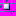
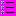
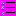
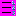
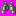
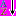
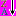
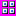

Libreria di immagini di Visual Studio: azioni (24 bit, formato .bmp, 16x16)
Immagini a 24 bit
Si tratta di un'immagine a colori a 24 bit. Per ottenere la trasparenza, impostare il colore di sfondo dell'interfaccia utente su RGB(255,0,255).
Limitazioni di utilizzo
Le icone di azione vengono utilizzate per rappresentare i comandi nella struttura di menu. Nella maggior parte dei casi si tratta di verbi di azione, anche se a volte sono rappresentate da nomi (oggetti o strumenti) cui sono associate delle azioni, quali Mostra o Nascondi. In quanto elementi di un linguaggio visivo, le seguenti immagini, o qualsiasi parte di esse, devono essere utilizzate in maniera conforme, sebbene non necessariamente in maniera identica, alle indicazioni fornite di seguito.
| Immagine | Nome file | Utilizzo |
|---|---|---|
| Azioni di modifica | ||
| Copy.bmp | Creazione di una copia | |
| Copyfolder.bmp | Copia di una cartella | |
| Cut.bmp | Taglia negli Appunti | |
| Delete.bmp | Eliminazione generica | |
| DeleteFolder.bmp | Eliminazione di una cartella | |
| Edit_Redo.bmp | Ripetizione di un'azione | |
| Edit_Undo.bmp | Annullamento di un'azione | |
| EditBrightContrast.bmp | Modifica del contrasto | |
| EditCode.bmp | Modifica del codice correlato | |
| EditInformation.bmp | Modifica delle informazioni | |
| FillDown.bmp | Copia del contenuto per riempire l'area verticalmente verso il basso | |
| FillLeft.bmp | Copia del contenuto per riempire l'area orizzontalmente verso sinistra | |
| FillRight.bmp | Copia del contenuto per riempire l'area orizzontalmente verso destra | |
| FillUp.bmp | Copia del contenuto per riempire l'area verticalmente verso l'alto | |
| InsertHyperlink.bmp | Inserimento di un collegamento ipertestuale | |
| InsertPhotos.bmp | Inserimento o visualizzazione di foto | |
| InsertPicture.bmp | Inserimento o visualizzazione di una foto | |
| InsertTabControl.bmp | Controllo struttura a schede o azione di aggiunta di un controllo struttura a schede | |
| Paste.bmp | Incolla dagli Appunti | |
| Rename.bmp | Ridenominazione | |
| Azioni di formattazione | ||
| AlignObjectsBottom.bmp | Allineamento degli elementi selezionati alla linea di base | |
| AlignObjectsCenteredHorizontalHS.bmp | Allineamento degli elementi selezionati orizzontalmente al centro | |
| AlignObjectsCenteredVerticalHS.bmp | Allineamento degli elementi selezionati verticalmente al centro | |
| AlignObjectsLeft.bmp | Allineamento degli elementi selezionati a sinistra | |
| AlignObjectsRight.bmp | Allineamento degli elementi selezionati a destra | |
| AlignObjectsTop.bmp | Allineamento degli elementi selezionati al margine superiore | |
| AlignTableCellMiddleCenter.bmp | Allineamento del contenuto della cella al centro | |
| AlignTableCellMiddleLeftJust.bmp | Allineamento del contenuto della cella a sinistra | |
| AlignTableCellMiddleRight.bmp | Allineamento del contenuto della cella a destra | |
|  | AlignToGrid.bmp | Allineamento di un elemento alla griglia |
| BehindText.bmp | Posizionamento di un oggetto dietro al testo | |
| Bold.bmp | Formattazione dei caratteri: testo in grassetto | |
| BringForward.bmp | Posizionamento dell'elemento corrente in alto di un livello | |
| BringToFront.bmp | Posizionamento dell'elemento corrente davanti a tutti gli altri elementi | |
| Choosecolor.bmp | Visualizzazione di un menu a discesa di campioni di colori | |
| Color.bmp | Avvio dell'interfaccia utente per la selezione di colori | |
| Color_eyedropper.bmp | Scelta di un colore mediante selezione con il mouse | |
| Color_font.bmp | Scelta del colore di primo piano di un tipo di carattere | |
| Color_linecolor.bmp | Scelta del colore delle linee | |
| Color_fill.bmp | Scelta di un colore per riempire l'area selezionata | |
| DisplayInColor.bmp | Visualizzazione a colori | |
| ExpandSpace.bmp | Incremento di spazio tra gli elementi | |
| FlipHorizontal.bmp | Capovolgimento orizzontale degli elementi | |
| FlipVertical.bmp | Capovolgimento verticale degli elementi | |
| Font.bmp | Modifica del tipo di carattere (scelta tra alcuni elementi di interfaccia utente per la selezione) | |
| FontDialog.bmp | Apertura della finestra di dialogo dei tipi di carattere: scelta del tipo di carattere | |
| Forecolor.bmp | Scelta del colore del tipo di carattere | |
| Highlight.bmp | Contrassegno di elementi o parole con evidenziazione | |
| HtmlBalanceBraces.bmp | Bilanciamento delle parentesi HTML | |
| Indent.bmp | Rientro della selezione | |
| IndentRTL.bmp | Rientro della selezione (orientamento da destra a sinistra) | |
| Italic.bmp | Formattazione dei caratteri: testo in corsivo | |
| LineColor.bmp | Scelta del colore delle linee | |
| LinkLabel.bmp | Formattazione della selezione come collegamento | |
|  | List_Bullets.bmp | Creazione di un elenco puntato |
|  | List_Numbered.bmp | Creazione di un elenco numerato |
|  | List_NumberedRTL.bmp | Creazione di un elenco numerato (orientamento da destra a sinistra) |
| List_NumberedVertT.bmp | Creazione di un elenco numerato verticale (dal basso verso l'alto) | |
| List_NumberedVertTB.bmp | Creazione di un elenco numerato verticale (dall'alto verso il basso) | |
| Outdent.bmp | Annullamento del rientro degli elementi selezionati | |
| RecolorPicture.bmp | Modifica di colori nell'immagine | |
| Resize.bmp | Modifica delle dimensioni dell'immagine | |
| SendBackward.bmp | Posizionamento dell'oggetto selezionato dietro l'elemento successivo | |
| Azioni o strumenti generici | ||
| Animate.bmp | Aggiunta di animazione all'elemento selezionato | |
| AddToFavorites.bmp | Aggiunta di un elemento ai Preferiti | |
| CheckGrammar.bmp | Controllo grammaticale della selezione o del file | |
| CheckSpelling.bmp | Controllo ortografico della selezione o del file | |
| CompareVersions.bmp | Confronto tra versioni diverse di un unico elemento | |
| Conflict.bmp | Indicazione di un conflitto o avvio dell'interfaccia utente per la risoluzione dei conflitti | |
| Dial.bmp | Connessione mediante linea telefonica | |
| Fax.bmp | Invio di un fax o avvio dell'interfaccia utente per ottenere i dettagli del fax | |
| Find.bmp | Avvio dell'interfaccia di ricerca o commit dell'azione di ricerca (se associata a una casella di testo) | |
|  | Find24_VS.bmp | Avvio dell'interfaccia di ricerca o commit dell'azione di ricerca (da utilizzare nel caso in cui le immagini monocromatiche siano la scelta preferita) |
| FindNext.bmp | Ricerca dell'elemento successivo | |
| FindNext_VS.bmp | Ricerca dell'elemento successivo (stile Visual Studio) | |
| FindPrevious_VS.bmp | Ricerca dell'elemento successivo (stile Visual Studio) | |
| FormRun.bmp | Esecuzione del progetto, del form o dell'applicazione corrente | |
| FormulaEvaluator.bmp | Valutazione della formula | |
| Function.bmp | Definizione di una funzione | |
| GetLatestVersion.bmp | Disponibilità della versione più recente dell'elemento selezionato | |
| ImagerScan.bmp | Analisi | |
| ImportXML.bmp | Importazione del contenuto XML | |
| InsertPage.bmp | Inserimento di una pagina (nuova o esistente) | |
| MoveFolder.bmp | Spostamento di una cartella | |
| MoveToFolder.bmp | Spostamento dell'elemento a una cartella specificata (avvio dell'interfaccia utente per la selezione di cartelle) | |
| MultiSelect.bmp | Selezione di più elementi | |
| Open.bmp | Avvio dell'interfaccia utente per la selezione di un elemento esistente da aprire | |
| OpenFolder_24.bmp | Apertura di una finestra di dialogo per la selezione di cartelle | |
| OpenFolder.bmp | Apertura della cartella selezionata | |
| OpenSelectedItem.bmp | Apertura dell'elemento selezionato | |
| Pause.bmp | Controllo VCR: Pausa (generale) | |
| PauseRecorder.bmp | Controllo VCR: Pausa di registrazione | |
| Play.bmp | Controllo VCR: Riproduci | |
| Print.bmp | Invio di un documento o un elemento alla stampante | |
| PrintPreview.bmp | Avvio dell'interfaccia utente per la visualizzazione in anteprima dei risultati di stampa | |
| PrintPreviewDialog.bmp | Visualizzazione di una finestra di dialogo per l'anteprima dei risultati di stampa | |
| PrintSetup.bmp | Avvio dell'interfaccia utente per la definizione dei margini e di altri dettagli del documento | |
| ProtectForm.bmp | Protezione del form dalle modifiche | |
| ProtectSubdocument.bmp | Protezione del documento secondario dalle modifiche | |
| PublishPlan.bmp | Visualizzazione pubblica di un documento | |
| PublishToWeb.bmp | Pubblicazione di un documento sul Web | |
| Record.bmp | Controllo VCR: Registra | |
| Repeat.bmp | Ripetizione dell'ultima azione | |
| Restart.bmp | Riavvio | |
| RightsRestricted.bmp | Limitazione delle autorizzazioni di visualizzazione o modifica per il documento o il file corrente | |
| Save.bmp | Salvataggio delle modifiche nell'elemento o nel file corrente | |
| SaveAll.bmp | Salvataggio delle modifiche in tutti i file aperti | |
| SaveAsWebPage.bmp | Salvataggio di un documento in formato HTML | |
| SaveFormDesign.bmp | Salvataggio dei dettagli di progettazione | |
| Search.bmp | Alternativa a Trova: avvio dell'interfaccia utente per la ricerca | |
| SearchFolder.bmp | Ricerca di una cartella | |
| SearchInFolder.bmp | Ricerca all'interno di una cartella | |
| SearchWeb.bmp | Ricerca nel Web | |
| Send.bmp | Aggiunta dell'elemento alla corrispondenza di posta elettronica | |
|  | SortAscending_24.bmp | Ordinamento di elementi (direzione specifica) |
|  | SortDescending_24.bmp | Ordinamento di elementi (direzione specifica) |
| SplitSubdocument.bmp | Suddivisione del documento in documenti secondari | |
| Stop.bmp | Arresto del processo corrente | |
| SychronizeList.bmp | Sincronizzazione di due elenchi | |
| Zoom.bmp | Zoom generico: apertura di una finestra di dialogo o finestra correlata per la selezione dell'aspetto di zoom | |
| Elementi o azioni relative a un elemento | ||
| Alerts.bmp | Aggiunta di un avviso, indicazione della configurazione di un avvio, apertura dell'interfaccia utente per gestire avvisi | |
| Attachment.bmp | Allegato: selezione del file da allegare al documento corrente | |
| AppWindow.bmp | Simbolo generico: finestra dell'applicazione | |
| Audio.bmp | File audio: riproduzione di un file audio | |
| BackgroundSound.bmp | Aggiunta o selezione di un file audio di sottofondo | |
| BarCode.bmp | Qualsiasi utilizzo previsto per un codice a barre | |
| book_active_directory.bmp | Apertura della directory attiva | |
| book_address.bmp | Apertura della rubrica | |
| Book_angle.bmp | Apertura della documentazione | |
| book_hardcvr.bmp | Apertura della documentazione | |
| Book_open.bmp | Documentazione (vista aperta) | |
| book_report.bmp | Oggetto: rappresentazione di un libro o rapporto (utilizzo variabile) | |
| Book_StackOfReports.bmp | Oggetti: rappresentazione di un insieme di libri o rapporti (utilizzo variabile) | |
| Breakpoint.bmp | Utilizzato per denotare o impostare un punto di interruzione | |
| Calculator.bmp | Avvio della calcolatrice | |
| Calendar_schedule.bmp | Avvio di una pianificazione o del calendario o scelta di una data di calendario | |
| Checkbox.bmp | Casella di controllo selezionata | |
| Comment.bmp | Aggiunta o modifica di un commento | |
| Document.bmp | Apertura di un nuovo documento o utilizzo come documento di base per le annotazioni | |
| DoubleLeftArrow.bmp | Freccia generica: significato variabile | |
| DoubleRightArrow.bmp | Freccia generica: significato variabile | |
| DownloadDocument.bmp | Download di un documento | |
| eps_closed.bmp | Corrispondenza non visualizzata | |
| eps_open.bmp | Corrispondenza precedentemente visualizzata | |
| eps_open_large.bmp | Corrispondenza precedentemente visualizzata | |
| Envelope.bmp | Messaggio di posta o corrispondenza | |
| Expiration.bmp | Associazione a un elemento con scadenza: scelta della data di scadenza | |
| Flag_blue.bmp | Contrassegno di un elemento o un file (per importanza o per semplice raggruppamento) | |
| Flag_green.bmp | Contrassegno di un elemento o un file (per importanza o per semplice raggruppamento) | |
| Flag_red.bmp | Contrassegno di un elemento o un file (per importanza o per semplice raggruppamento) | |
| Graph.bmp | Visualizzazione di un grafico | |
| Help.bmp | Apertura dell'argomento della Guida associato | |
| History.bmp | Visualizzazione della cronologia | |
| Home.bmp | Pagina iniziale (Web) | |
| HtmlPage.bmp | Apertura o creazione di una pagina HTML | |
| HTMLPassword.bmp | Controllo password | |
| Link.bmp | Creazione di un collegamento ipertestuale | |
| HTMLSubmit.bmp | Inoltro form | |
| NewCard.bmp | Creazione di una nuova nota con informazioni sul contatto | |
| NewDocument.bmp | Creazione di un nuovo documento | |
| NewFolder.bmp | Creazione di una nuova cartella | |
| NewMessage.bmp | Creazione di un nuovo messaggio | |
| NewReport.bmp | creazione di un nuovo rapporto | |
| NewWebsite.bmp | Creazione di un nuovo sito Web | |
| NewWindow.bmp | Visualizzazione del contenuto della finestra corrente in una nuova finestra | |
| Note.bmp | Creazione, aggiunta o modifica di una nota | |
| Options.bmp | Avvio dell'interfaccia utente per le opzioni | |
| Organizer.bmp | Apertura di un organizer o indicazione dell'organizzazione generica della selezione corrente | |
| Orgchart.bmp | Creazione o visualizzazione di un grafico organizzativo | |
| PageNumber.bmp | Visualizzazione del numero di pagina o aggiunta di un numero di pagina al documento | |
| PieChart.bmp | Grafico: grafico a torta | |
| PieChart3D.bmp | Grafico: grafico 3D | |
| Pointer.bmp | Puntatore del mouse generico (qualsiasi contesto) | |
| Properties.bmp | Visualizzazione delle proprietà dell'elemento selezionato in una griglia o in una casella delle proprietà generica | |
| Pushpin.bmp | Possibile permanenza dell'elemento nella visualizzazione | |
| RadialChart.bmp | Grafico: radiale | |
| RightArrow.bmp | Freccia: qualsiasi utilizzo | |
| RightArrow2.bmp | Freccia: qualsiasi utilizzo | |
| RoutingSlip.bmp | Aggiunta delle informazioni di routing o altri dettagli al documento corrente | |
| SpeechMic.bmp | Attivazione del microfono o delle funzioni vocali | |
| Symbol.bmp | Simbolo (nessun utilizzo specifico) | |
| Task.bmp | Oggetto: attività o visualizzazione di un elenco di attività | |
| Textbox.bmp | Controllo casella di testo | |
| ThumbnailLoading.bmp | Simbolo di immagine generico: utilizzabile come segnaposto di immagini in qualsiasi situazione | |
| TurnAhead.bmp | Significato variabile | |
| Warning.bmp | Visualizzazione di un avviso non critico ma rilevante per l'utente | |
| Web.bmp | Web | |
| XMLFile.bmp | Oggetto: file XML | |
| Visualizzazioni o finestre di modifica | ||
| ActualSize.bmp | Visualizzazione delle dimensioni effettive di una pagina | |
| ArrangeSideBySide.bmp | Disposizione affiancata delle pagine selezionate | |
| CanvasScale.bmp | Ridimensionamento dell'area visibile del documento | |
| CenterAcross.bmp | Contenuto centrato nel contenitore | |
| Filter2.bmp | Visualizzazione sottoposta a filtro o avvio dell'interfaccia utente per l'applicazione di filtri | |
| GoLtr.bmp | Vai (orientamento da sinistra a destra) | |
| GoRtl.bmp | Vai (orientamento da destra a sinistra) | |
| GoToNext.bmp | Visualizzazione dell'elemento, argomento, documento successivo o elementi simili | |
| GoToNextRecord.bmp | Visualizzazione del record successivo dell'insieme | |
| GoToParentFolder.bmp | Spostamento di una cartella in alto nella gerarchia di directory | |
| GoToPrevious.bmp | Visualizzazione del record precedente dell'insieme | |
| GoToPreviousMessage.bmp | Visualizzazione del messaggio precedente | |
| GoToPreviousRecord.bmp | Visualizzazione del record precedente | |
| GoToShortcuts.bmp | Indicazione di un collegamento | |
| Legend.bmp | Visualizzazione di una legenda | |
| MonthlyView.bmp | Visualizzazione di una pagina del mese | |
| MultiplePages.bmp | Visualizzazione di più pagine alla volta o possibilità di visualizzare un layout a più pagine | |
| NavBack.bmp | Posizione precedente | |
| NavForward.bmp | Posizione successiva | |
| NextPage.bmp | Visualizzazione o spostamento a una nuova pagina | |
| PageUp.bmp | Spostamento di una pagina in alto | |
| PageWidth.bmp | Impostazione della larghezza della pagina o possibilità di estendere il contenuto all'intera larghezza | |
| Portrait.bmp | Contenuto del documento visualizzato in formato verticale | |
| PortraitToLandscapeView.bmp | Modifica dell'orientamento del documento da orizzontale a verticale | |
| PreviousPage.bmp | Visualizzazione della pagina precedente | |
| Refresh.bmp | Aggiornamento della visualizzazione nella finestra | |
| RefreshDocView.bmp | Aggiornamento del contenuto del documento | |
| Refresh_Cancel.bmp | Annullamento dell'aggiornamento | |
| RightToLeftDocument.bmp | Visualizzazione del contenuto da destra a sinistra | |
| ShowAllComments.bmp | Visualizzazione di tutti i commenti relativi alla selezione corrente | |
| ShowGridlines.bmp | Visualizzazione delle linee della griglia non visibili | |
| ShowGridlines2.bmp | Visualizzazione delle linee della griglia non visibili | |
| ShowRulelines.bmp | Visualizzazione di righe o quadretti | |
| ShowRuler.bmp | Visualizzazione del righello | |
| ThumbnailView.bmp | Visualizzazione contenente più immagini o documenti | |
|  | ViewThumbnails.bmp | Visualizzazione di più immagini o documenti |
| Dati | ||
| AddTable.bmp | Aggiunta di una tabella dati | |
| DataContainer_MoveFirst.bmp | Dati: spostamento al primo record | |
| DataContainer_MoveLast.bmp | Dati: spostamento all'ultimo record | |
| DataContainer_MoveNext.bmp | Dati: spostamento al record successivo | |
| DataContainer_MovePrevious.bmp | Dati: spostamento al record precedente | |
| DeleteTable.bmp | Eliminazione di una tabella dati | |
| EditTable.bmp | Modifica del contenuto di una tabella dati | |
| PrimaryKey.bmp | Dati: indicazione della chiave primaria | |
| Relationships.bmp | Visualizzazione di relazioni tra tabelle o elementi | |
| Table.bmp | Oggetto: tabella dati | |
| Modifica di configurazione delle finestre | ||
| ArrangeWindows.bmp | Disposizione orizzontale delle finestre | |
| CascadeWindows.bmp | Sovrapposizione delle finestre documento aperte | |
| FullScreen.bmp | Accesso a una modalità visiva che ingrandisce al massimo lo spazio disponibile per la visualizzazione o la modifica | |
| Windows.bmp | Windows | |